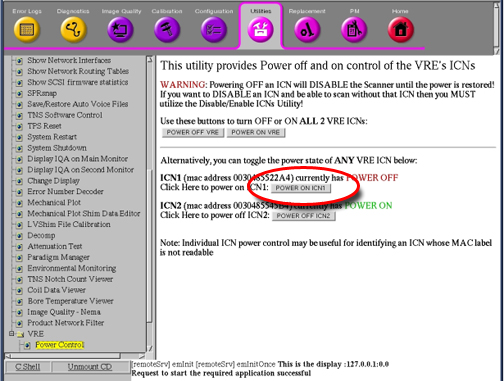

Operating Documentation
Direction 5440001-3, Rev# 6
Module Version 4.0, Version Date 10/23/08
Operating Documentation |
| ||||
| ELECTROCUTION HAZARD! | ||||
| DANGEROUS VOLTAGES ARE PRESENT THROUGH OUT THE SYSTEM CABINET WHEN POWER IS APPLIED. | ||||
| REFER TO OSHA LOCKOUT TAGOUT REQUIREMENTS. |
| ||||
| Follow This Procedure For Removing Power To ICN Chassis. Failure To Properly Power Down ICN’s May Result In Premature ICN Failure. | ||||
| ||||
| Do Not Turn Power Off On The ICNs From The Power Button On The Front Panel. The ICNs Have Software Running On Disk Drives That May Become Corrupted If Not Shut Down Properly. | ||||
If the application's software is down, you can power down ICN's by using command line at the root level.
Log into the application. Username: root Password: operator.
In the xterm window, type: /etc/init.d/poweron_vres stop and press <Enter>. The ICN(s) should turn off after one minute.
At the host computer, go to the Service Browser ⇒ [Utilities] ⇒ [VRE] ⇒ [Power Control] as shown in Illustration 1.
Confirm the ICN Numbers and their MAC Addresses. The MAC addresses are printed on a sticker at the back of the ICNs as shown in the Illustration 2. For 5127452 and the front of the ICNs as shown in Illustration 3 for 5127452-3.
Click on the [Power OFF ICNX] Icon as shown in the Illustration 4. Wait for the ICN to power off . Upon refreshing the Power Control link,Illustration 5 show the ICN's in their current state.
The ICN(s) are powered down if the blue LEDs in front of the ICNs are no longer illuminated or flashing. See Illustration 6 for 5127452 and Illustration 7 for 5127452-3.
| ||||
| In the event you do not have access to the browser or the command line, you will have to power off the ICNs manually. Please try this method before powering off the GOC (see Step ). This is the preferred method because it does not corrupt the files on the hard drive. | ||||
Momentarily depress the power button (Illustration 7). This brings down the ICNs in a “soft” method. It takes about a minute or two for the OS to boot down.
If the OS freezes or is not responding, then the “soft” method did not work properly. In this case, hold the power button down for six seconds to force the power off.
ICN's can be switched on from VRE Power Control through the Service Browser ⇒ [Utilities] ⇒ [Power Control], as shown in Illustration 8.
Illustration 8: ICN Switch ON
